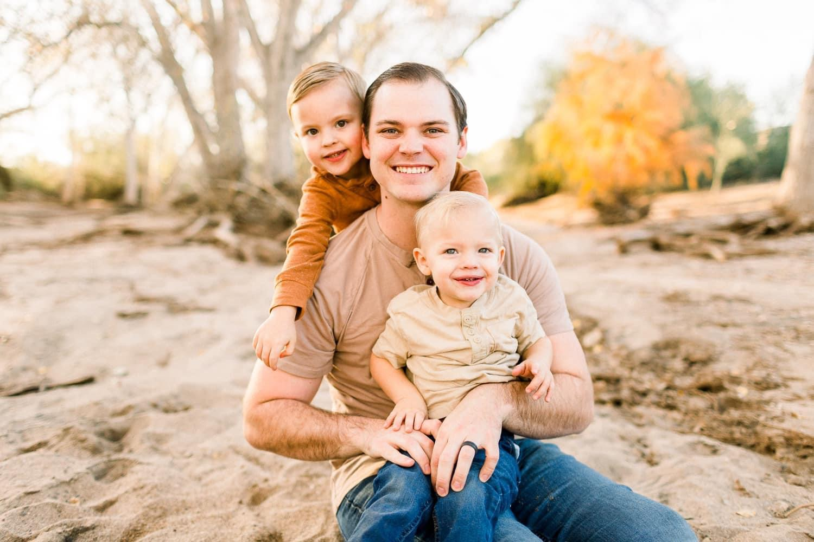
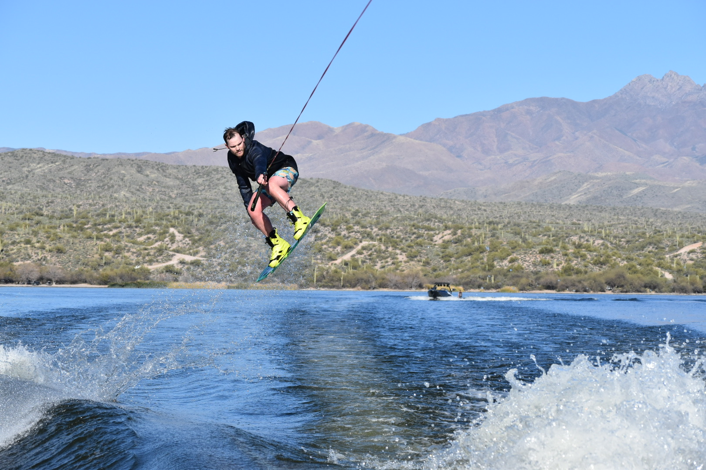
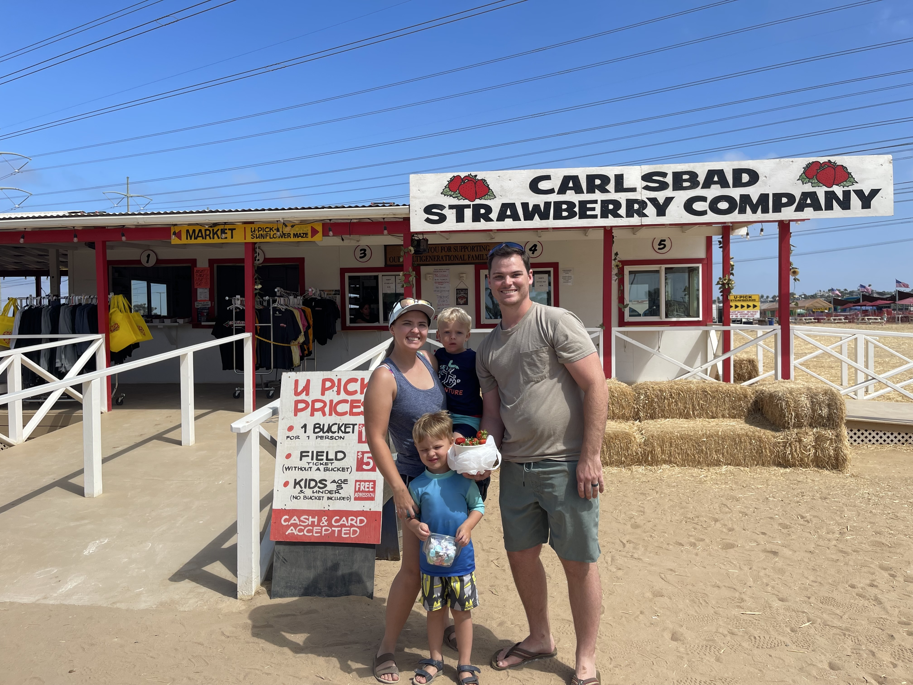
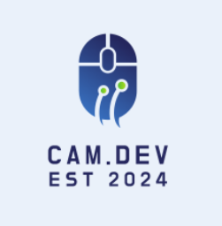

Hello There! My name is Cameron Hodges and I'm a passionate software developer from Mesa, Arizona, with a love for adventure and creativity.
When I'm not coding, You can find me wakeboarding, snowboarding or spending time with my energetic family.
Learn about my journey

My journey to becoming a developer was anything but straightforward. I explored various fields,
before discovering my passion for software development. Although I am an entry-level engineer with
less than one year of professional experience, I have a strong fundamental understanding of HTML, CSS, and JavaScript.
Learn about my Inspiration

Balancing personal and professional life is crucial, and I am fortunate to have a supportive partner.
My wife is a rockstar who takes care of our kids and supports me in my career endeavors.
My family is my greatest motivation, inspiring me to continuously improve and learn. I firmly
believe that education is a lifelong journey and strive to better myself every day. Together,
we prioritize family, honesty, faith, and dedication in all aspects of our lives.
Learn about my Goals

My love for creating new things found a perfect match in software development, a career where my passions align.
I am actively honing my coding skills through Codecademy courses and engaging with other developers
and building relationships for future learning. Looking ahead, I aspire to become a Senior Developer and launch my
own SaaS product for network/computer security.
Jump to the top